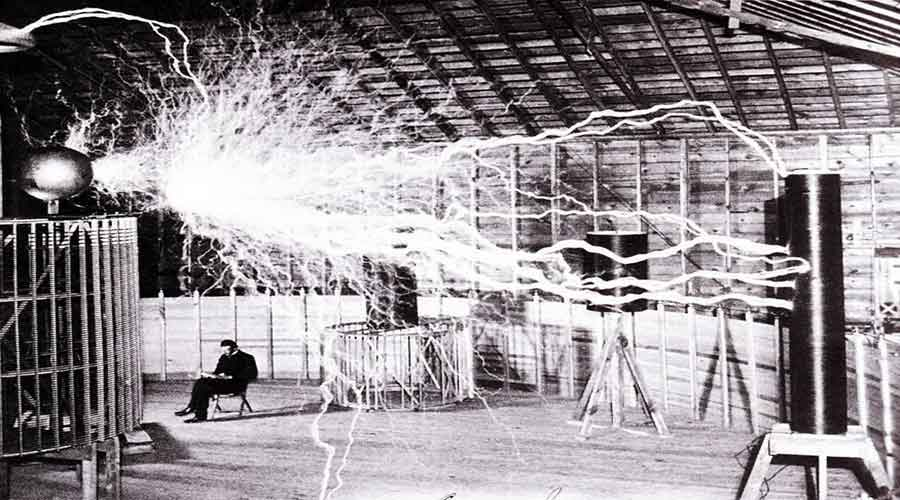
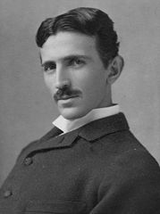

|  |

|

|

|
Tesla's History
Nikola Tesla (10 July 1856 – 7 January 1943) was a Serbian-American inventor, electrical engineer, mechanical engineer, physicist, and futurist best known for his contributions to the design of the modern alternating current (AC) electrical supply system.
Tesla started working in the telephony and electrical fields before immigrating to the United States in 1884 to work for Thomas Edison. He soon struck out on his own with financial backers, setting up laboratories/companies to develop a range of electrical devices. His patented AC induction motor and transformer were licensed by George Westinghouse, who also hired Tesla as a consultant to help develop an alternating current system. Tesla is also known for his high-voltage, high-frequency power experiments in New York and Colorado Springs which included patented devices and theoretical work used in the invention of radio communication, for his X-ray experiments, and for his ill-fated attempt at intercontinental wireless transmission in his unfinished Wardenclyffe Tower project.
Tesla's achievements and his abilities as a showman demonstrating his seemingly miraculous inventions made him world-famous. Although he made a great deal of money from his patents, he spent a lot on numerous experiments over the years. In the last few decades of his life, he ended up living in diminished circumstances as a recluse in Room 3327 of New Yorker Hotel, occasionally making unusual statements to the press. Because of his pronouncements and the nature of his work over the years, Tesla gained a reputation in popular culture as the archetypal "mad scientist". Tesla died penniless and in debt on 7 January 1943.
Tesla's work fell into relative obscurity after his death, but since the 1990s, his reputation has experienced a comeback in popular culture. In 2005, he was listed amongst the top 100 nominees in the TV show "The Greatest American", an open access popularity poll conducted by AOL and The Discovery Channel. His work and reputed inventions are also at the center of many conspiracy theories and have also been used to support various pseudosciences, UFO theories and New Age occultism.
In 1960, in honor of Tesla, the General Conference on Weights and Measures for the International System of Units dedicated the term "tesla" to the SI unit measure for magnetic field strength.